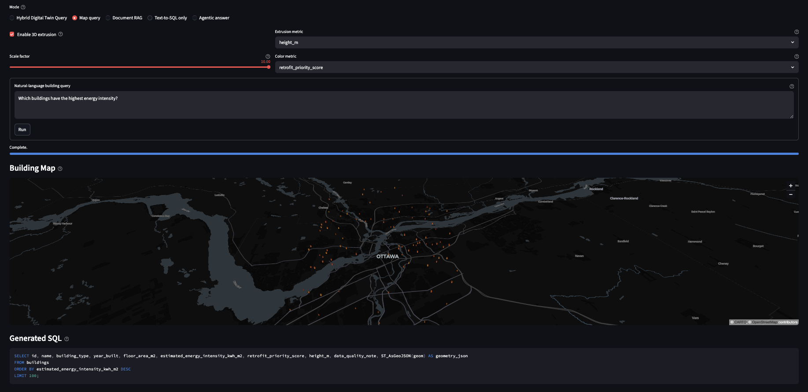
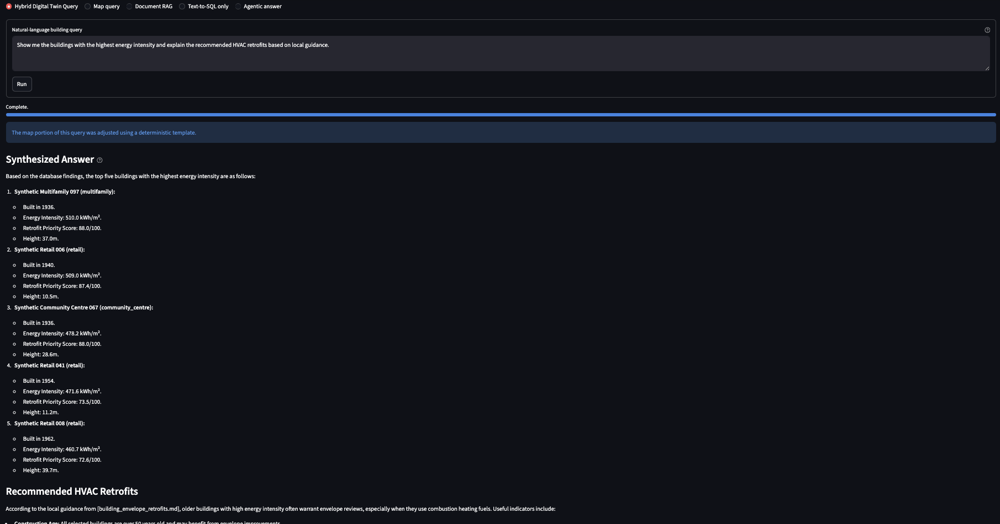

Accessibility gap
Building-stock datasets are in relational databases with spatial geometry. Non-technical users cannot query them without specialized tools or SQL knowledge.
Project Case Study
An agentic assistant for querying building-stock digital twin datasets in plain English, without SQL expertise.
Building-stock datasets for energy retrofit planning are rich but inaccessible. The data lives in PostgreSQL with PostGIS geometry — useful for engineers and data scientists, opaque for everyone else. Non-technical users working with retrofit programs, municipal planners, and community organizations have legitimate questions: which buildings in a neighbourhood are the worst-performing? How many pre-1980 homes lack adequate insulation? What does the retrofit guidance say about that building type?
TwinQuery closes that gap. It accepts a plain-English question, routes it through a safe Text-to-SQL pipeline backed by deterministic guardrails, executes PostGIS queries over Ottawa building-footprint geometry, and synthesizes the answer with retrieved retrofit guidance from a local RAG system. The result is a response grounded in both database rows and document sources, with the SQL shown so users can verify what was actually run.

Retrofit planning tools are built for specialists. A planner who wants to know which census tracts have the highest concentration of pre-1980 residential buildings cannot easily get that answer without writing a PostGIS spatial join. A community advocate asking about insulation upgrade pathways for a specific building archetype needs to search retrofit documents manually. Neither person should have to learn SQL or dig through PDFs.
The technical challenge is not just generating SQL from text. It is generating SQL that is safe to run, correct against a specific schema, and paired with document context that makes the answer actually useful. LLMs hallucinate table names, invent columns, and produce queries that fail silently or return misleading results. Any system intended for non-technical users has to treat SQL generation as an untrusted output that needs validation.
Building-stock datasets are in relational databases with spatial geometry. Non-technical users cannot query them without specialized tools or SQL knowledge.
LLMs generating SQL against unfamiliar schemas produce plausible-looking queries that reference wrong columns, wrong tables, or apply incorrect filters.
Database rows answer what. Retrofit guidance documents answer why and how. A useful response needs both, synthesized coherently.
Building-stock data can contain sensitive property information. Local inference removes the need to send queries or data to external APIs.
TwinQuery uses LangGraph to orchestrate a multi-step agent pipeline. Rather than a single prompt-to-answer flow, the pipeline separates query interpretation, SQL generation, validation, execution, RAG retrieval, and synthesis into discrete nodes. This makes each step inspectable and replaceable independently.
SQL generation for non-technical users requires more than a prompt. The pipeline implements several layers of defense against the common failure modes of LLM-generated SQL.
Before any query reaches the database, a rule-based validator checks that it is a
SELECT statement, references only schema-known tables and columns, and does
not contain destructive clauses. Queries failing validation are rejected with an
explanation rather than silently returning empty results.
For common question patterns — nearest buildings, buildings by type within an area, retrofit priority ranking — the pipeline matches against a library of pre-validated query templates with slot-filled parameters. Template hits bypass LLM generation entirely.
Validated queries run against a PostgreSQL database with PostGIS extension over Ottawa
building-footprint geometry. Spatial queries use ST_Within,
ST_DWithin, and ST_Intersects to answer location-relative
questions.
Every answer surfaces the generated SQL in an expandable panel. Non-technical users can ignore it; technical users can verify it. This makes the system auditable without forcing users to engage with the query.
The RAG component retrieves relevant passages from retrofit guidance documents and building-code references. Everything runs locally through Ollama, with no external embedding or inference API calls.

The frontend is a Streamlit application backed by a FastAPI service layer. The architecture keeps the agent pipeline independent of the interface so the API can be consumed by other frontends or integrated into broader platforms.
The agent pipeline is exposed through a FastAPI backend with typed request and response schemas. Endpoint contracts are tested independently of the Streamlit interface so the API remains a stable integration surface.
Building query results are rendered on a PyDeck map with togglable 2D polygon and 3D extruded views. Buildings matching the query are highlighted so users can immediately see the spatial distribution of results.
The interface surfaces the generated SQL, retrieved document sources, and the synthesized answer as separate panels. Users control how much of the pipeline they want to inspect.
The full stack — PostgreSQL/PostGIS, Ollama, FastAPI, and Streamlit — is containerized with Docker Compose. A single command starts the complete environment with no external dependencies.
The core design tension in TwinQuery is between LLM flexibility and deterministic safety. The resolution is not to trust the LLM less, but to constrain its authority to the parts of the pipeline where flexibility is actually needed.
TwinQuery is a research prototype aimed at demonstrating agentic Text-to-SQL and RAG for building-stock data. Several limitations apply before it would be production-ready for a live municipal platform.